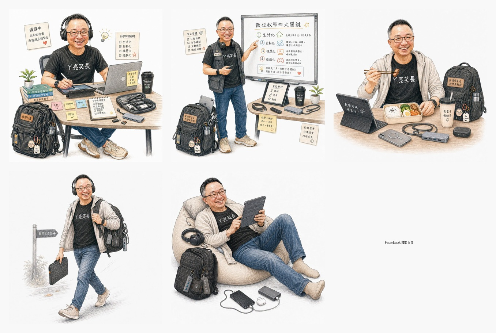

Facebook｜洪旭亮：個人 IP 角色一致性手繪素描風格 Prompt

為什麼保存
這則 Facebook 貼文值得收錄，因為它不是單純「換畫風」prompt，而是把人物照片、個人品牌元素、角色設定與批次生成任務結合起來，形成一套適合教師、自媒體與課程經營者重複使用的「個人 IP 角色素材」做法。
來源貼文頁面標示為「AI 內容」，公開未登入視圖可見作者洪旭亮分享「提示詞分享」，並展示多張方形角色範例圖。頁面可見互動約 135 個心情、73 則留言、31 次分享。
原始提示詞重點
```text
請參考我上傳的角色圖片，並啟動嚴格臉部一致性模式，確保人物的五官、髮型與特徵完全保持不變。
設計手繪素描風格的人物，白色背景，人物以簡單的色鉛筆素描風格繪製，線條清晰可見，略顯粗糙且富有藝術感。
人物要有黑色的輪廓線條，身穿黑色T恤，胸口有「ㄚ亮笑長」字樣，藍色牛仔褲，奶茶色球鞋，geek裝扮，頭上戴著全罩式耳機，揹著電腦背包，身上有許多3C配件。
請用以上的個人 IP，生成10張各種不同裝扮、不同情境（備課、上課、吃飯等）、不同姿態（走路、坐著、躺著等）的圖片，不一定要全身，務必分開生成，一次只生一張，共 10 張。
```
Prompt 拆解
| 片段 | 作用 |
|---|---|
| 參考我上傳的角色圖片 | 建立角色來源，適合用真人照片、既有角色設計或教師形象照作起點。 |
| 嚴格臉部一致性模式 | 明確要求五官、髮型與辨識特徵不變，降低多張圖角色漂移。 |
| 手繪素描、白色背景、色鉛筆 | 把角色從寫實照片轉成親切、低壓、教材友善的插畫素材。 |
| 固定服裝與配件 | 用黑 T、牛仔褲、奶茶色球鞋、耳機、電腦包、3C 配件建立 IP 辨識。 |
| 10 張不同情境與姿態 | 把單張角色轉成素材庫，可用在簡報、社群貼文、貼圖或教學活動圖卡。 |
| 一次只生一張 | 降低多圖批次時人物變形、比例混亂與角色設定遺失的機率。 |
圖卡觀察
公開頁面未登入狀態可取得前 5 張高解析圖卡，版面顯示另有「+6」項目；未登入無法可靠取得完整 10–11 張，因此本文只保存可見圖片，不補寫不可見內容。
欒帥可直接改用的通用版 Prompt
```text
請參考我上傳的角色圖片，並盡量維持角色的臉部一致性：五官比例、髮型、臉型、表情氣質與主要辨識特徵都要保持穩定。
請把角色設計成「手繪色鉛筆素描風格」的個人 IP 插畫：白色背景、清楚黑色輪廓線、略帶粗糙手繪感、親切、有教育品牌感，不要過度寫實，也不要變成 3D 模型。
固定角色設定：
- 服裝：[填入固定服裝，例如黑色 T 恤、牛仔褲、球鞋]
- 代表配件：[填入固定配件，例如耳機、筆電背包、平板、相機、教材]
- 品牌文字：[填入要出現在衣服或道具上的短字，若模型文字不穩，可改成留白]
- 氣質：[填入，例如科技感、幽默、溫暖、專業]
請用這個角色 IP 分開生成 10 張圖，每張都是不同情境、不同姿態、不同構圖；一次只生成一張。情境包含：備課、上課、討論、休息、吃飯、走路、坐著、展示教材、操作電腦、與學生互動。每張都要保持同一個角色，而不是重新設計新人物。
```
使用注意事項
- 「嚴格臉部一致性」是意圖描述，不是所有平台都有同名模式；實際穩定度取決於模型、參考圖品質與是否支援 character/reference image。
- 若使用真人照片，需確認本人同意；若用學生、同事、名人或未成年人照片，尤其要避免未授權生成或商業使用。
- 衣服上的中文字常會變形；正式品牌素材可先讓模型留白，再用設計工具後製加字。
- 若角色要商用，需確認原照片、Logo、字樣、服裝圖案與生成平台條款。
- 建議先固定角色設定，再逐張變更情境；不要一次要求 10 張同時生成，否則角色與文字更容易漂移。
適合應用
- 教師個人品牌角色、課程活動吉祥物、簡報陪伴角色。
- 社群貼文圖卡、LINE 貼圖草稿、教材封面與課堂任務卡。
- AI 教學示範：展示「角色一致性」「參考圖」「情境變體」「批次素材庫」的工作流。